QGIS Trigger Workflow for Madagascar#
French Translation
The french version of this page can be found here: La version française de cet article se trouve ici:
Download the data and project files
The QGIS project file, the model, and the datasets required for the model can be downloaded from HeiGITs Gitlab here:
The QGIS workflow presented in this article was developed in the framework of the Anticipatory-Action (AA) Project of the Croix-Rouge Malagasy (CRM), the German Red Cross (GRC) and the Heidelberg Institute for Geoinformation Technology (HeiGIT).
The workflow is almost fully automated through a QGIS model, requiring no manual intervention. The chapterFunctionality of the workflow outlines the process and its practical implementation. Each step included in the model is explained in detail to provide a complete understanding of the workflow and how the analysis was carried out.
Background#
Setting triggers is one of the cornerstones of the Forecast-based Financing system. For a National Society to have access to automatically released funding for their early actions, their Early Action Protocol needs to clearly define where and when funds will be allocated, and assistance will be provided. In AA, this is decided according to specific threshold values, so-called triggers, based on weather and climate forecasts, which are defined for each region (see FbF Manual).
Trigger Statement#
Pre-Activation Trigger: at least one of the meteorological forecasts from Météo Madagascar, RMSC La Reunion, or ECMWF projects a greater than 50% likelihood of landfall by a tropical cyclone of tropical storm strength or higher within the next 7 days.
Activation Trigger: if the Meteo Madagascar (DGM) forecast indicates landfall of a tropical cyclone with wind speeds in excess of 118 km/h within the next 48-72 hours.
Functionality of the Workflow#
The Trigger Process concept is displayed in the figure below.
{kind=link}
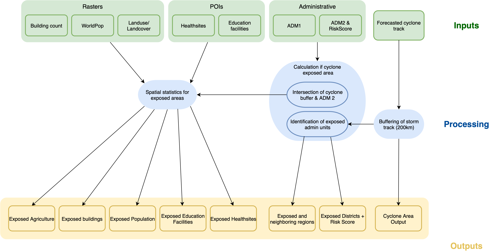
The provided QGIS project contains the necessary layers and a QGIS model file to perform an assessment of the potential impact of the predicted cyclone event. The analysis workflow will be run in the QGIS model, which automates the steps for assessing the impact of a tropical cyclone event. It integrates cyclone storm track data with administrative boundaries, population data, infrastructure, and service locations to identify and quantify exposed areas and resources. Based on the cyclone forecast by Météo Madagascar, the model calculates the area likely to be exposed to the cyclone, the potentially exposed population, number of exposed buildings, exposed agricultural land, and potentially exposed health and education facilities.
Additionally, the QGIS file includes layers with the CRM warehouses and the areas they can service, allowing for a quick accessibilty assessement. The provided folder also contains map templates and style files to generate map reports based on the model calculations.
The documentation is separated into two parts. The first part covers the spatial analysis using the automated QGIS model. The second part documents how to create the map reports using the map templates and style files.
Attention
The QGIS project and QGIS model have been created using QGIS version 3.40.9 (LTR) Bratislava. To ensure that the model is working correctly, do not use older QGIS versions.
Available Data#
For the trigger mechanism to work properly we currently use different datasets: data that we assume to be static in the near term, and variable data which describe the datasets that will be checked for triggering on a regular basis depending on the occurrence of anticipated cyclone events.
Download the data and project files
The QGIS project file, the model, and the datasets required for the model can be downloaded from HeiGITs Gitlab here:
Downlaoding the project.
To download the project click on the
Fixed Data#
By fixed data we mean datasets that are needed to create the map reports, that will most probably not change in the near term. In the long term these datasets can be adapted easily.
Dataset |
Source |
Descriptions |
|---|---|---|
Administrative Boundaries |
The administrative boundaries on level 0-4 for Madagascar can be accessed via HDX provided by OCHA. For this trigger mechanism we provide the administrative boundaries on level 1 (regional level) and 2 (district level) as a shapefile. |
|
POI counts |
The POI data (education facilities and health sites) is downloaded using the HOT Export Tool based on OpenStreetMap data. |
|
CRM Warehouses |
Croix-Rouge Malagasy |
This layer contains points representing the locations of the CRM warehouses |
CRM Warehouse Isochrones |
HeiGIT |
Using the Global Friction Surface, we calculated the area which can be reached within a specific amount of time from a given warehouse by car. |
Population Counts |
The worldpop dataset in raster format provides the estimated total number of people per grid-cell for the year 2020. We will be working with the Constrained Individual countries 2020 dataset at a resolution of 100m. |
|
Buildings Counts |
The building counts dataset in raster format counts the number of buildings per 100m grid cell. The workflow on how this dataset was created can be found on GitLab |
|
Land Cover |
The land cover dataset in raster format provides an overview over the dominant land cover type at a resolution of 100m. The workflow on how this dataset was downloaded can be found on GitLab |
Master Raster
The three raster datasets are combined into a Master Raster — a multi-band raster layer with a spatial resolution of 100 meters. This composite layer includes the following information across three channels:
Population counts per grid cell from Worldpop constrained (2020)
Building counts per grid cell derived from ML Building Footprints (2021)
Land Cover type per grid cell derived from Copernicus Land Cover (2019)
Monitoring Data#
Attention
The forecast information will be sourced from DGM (Météo Madagascar), which will provide tropical cyclone track data for the trigger workflow.
For an analysis of past events, data provided by NOAA (National Centers for Environmental Information) can be used. The cyclone storm tracks are provided within the International Best Track Archive for Climate Stewardship (IBTrACS) project. It is the most complete global collection of tropical cyclones available and merges recent and historical tropical cyclone data from multiple agencies to create a unified, publicly available, best-track dataset. IBTrACS was developed collaboratively with all the World Meteorological Organization (WMO) Regional Specialized Meteorological Centres, as well as other organizations and individuals from around the world.
Cyclone tracks
Tropical cyclone track data is available in various subsets, depending on the temporal scale of interest. Regional subsets can also be generated, with data for the South Indian Ocean being particularly relevant for this trigger mechanism.
Estimating the impact of the cyclone using the QGIS model#
As explained at the start of this chapter the developed trigger workflow is done automatically by a QGIS model. In this chapter we will explain its functionality and in a subsequent step it is explained how to run the automated model.
Functionality of the model#
The following key processing steps are run inside the model:
Cyclone Buffering & Impact Area Extraction
The input cyclone track is buffered to create an estimated zone of impact. The buffer is dissolved to generate a single polygon representing the exposed cyclone area. This layer serves as the base for subsequent exposure calculations.
Exposed Administrative Units
The buffered cyclone area is intersected with district (Admin 2) boundaries to extract the exposed districts. These are further linked with regions (Admin 1) using the region (Admin 1) names attribute to structure exposed districts by region. This hierarchy is used for reporting and map layout purposes.
Population Impact
The model uses the population raster to calculate zonal statistics over the exposed districts. This determines the total population per district and the exposed population, which is then exported to a table.
Infrastructure Impact
The cyclone buffer is intersected with:
Buildings to extract exposed buildings.
Health sites and education facilities layers to extract and summarize exposed points of interest. These datasets are combined into a table, summarizing exposed infrastructure.
How to run the model#
The QGIS Model Designer is a visual tool that allows users to create and edit a workflow with all tools available in QGIS that can be used repeatedly in a simple and time-efficient manner, while ensuring reproducibility. It provides a graphical interface to build workflows by connecting geoprocessing tools and algorithms. The user can define inputs, outputs, and the flow of data between different processing steps.
Step 1: Explanation of the folder structure#
{kind=link}
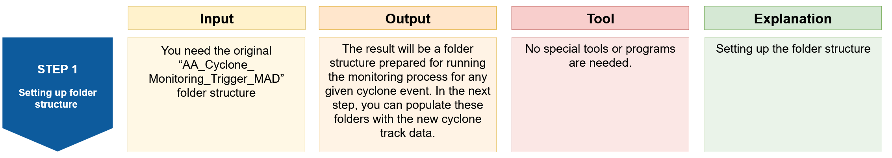
Purpose: This step outlines the recommended folder structure to simplify the analysis and ensure consistent, reproducible results.
Tool: No special tools or programs are needed
Instruction |
Folder Structure |
|---|---|
|
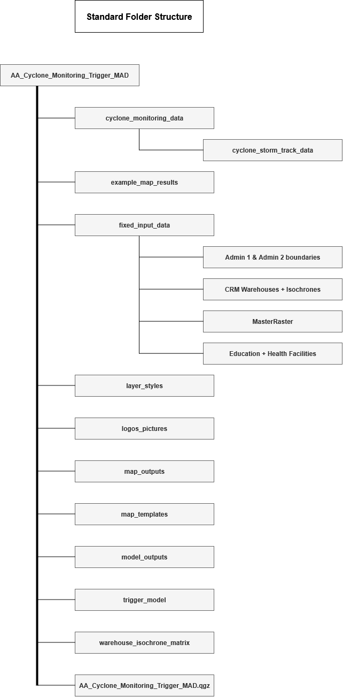 |
{kind=link}
Step 2: Open the project in QGIS and load the model in the QGIS Model Designer#
{kind=link}
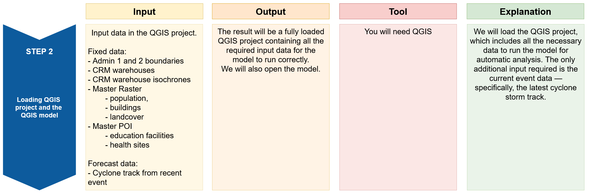
In this step we will open our Trigger project in QGIS and load the QGIS model which will automatically run the analysis for us.
Open the file
AA_Cyclone_Monitoring_Trigger_MAD.qgzby double clicking on it.The QGIS project will open with lots of data pre-loaded. This data is required for running the QGIS model and create some output maps.
The data will be structured into five groups:
{kind=link}
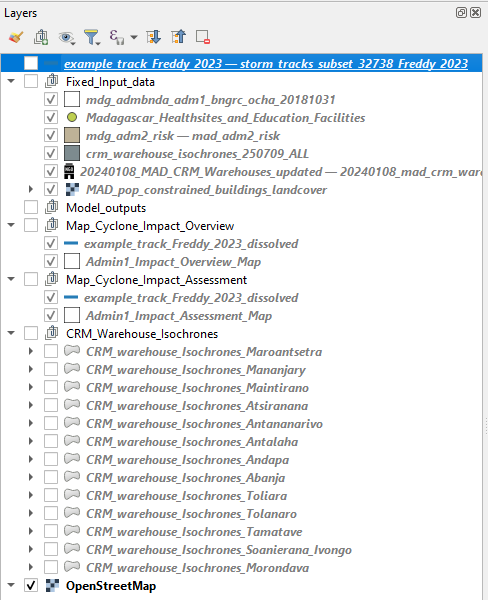
Group 1: Fixed_Input_data
This group contains all the fixed input data required to successfully run the model. These datasets remain constant and do not change between events. The only additional input needed is the storm track for the event under investigation, which should be added before this data group in the layer panel.
Attention
Always ensure you are using the most up-to-date storm track for the event being analyzed. To add the layer, simply drag and drop it into the Layers panel, placing it directly above the Fixed_Input_data group for clarity.
For better data management, give the storm track a descriptive name, such as storm_track_eventname_year (e.g. storm_track_freddy_2023). This naming convention helps keep your workspace organized and ensures the correct data is used during the analysis.
Group 2: Model_outputs
This group is used to organize all output layers generated by the model after it has been run. You can review the outputs here and identify which layers are relevant for specific maps. Once identified, move them to the appropriate map group for visualization and layout.
Group 3: Map_Cyclone_Impact_Overview
This group includes all the layers required to create the Cyclone Impact Overview Map (shown below). The storm track and region (Admin1) boundaries (Admin1_Impact_Overview_Map) are pre-loaded to help you get started quickly.
Make sure you’re working with the correct and updated storm track for the event under investigation.
{kind=link}
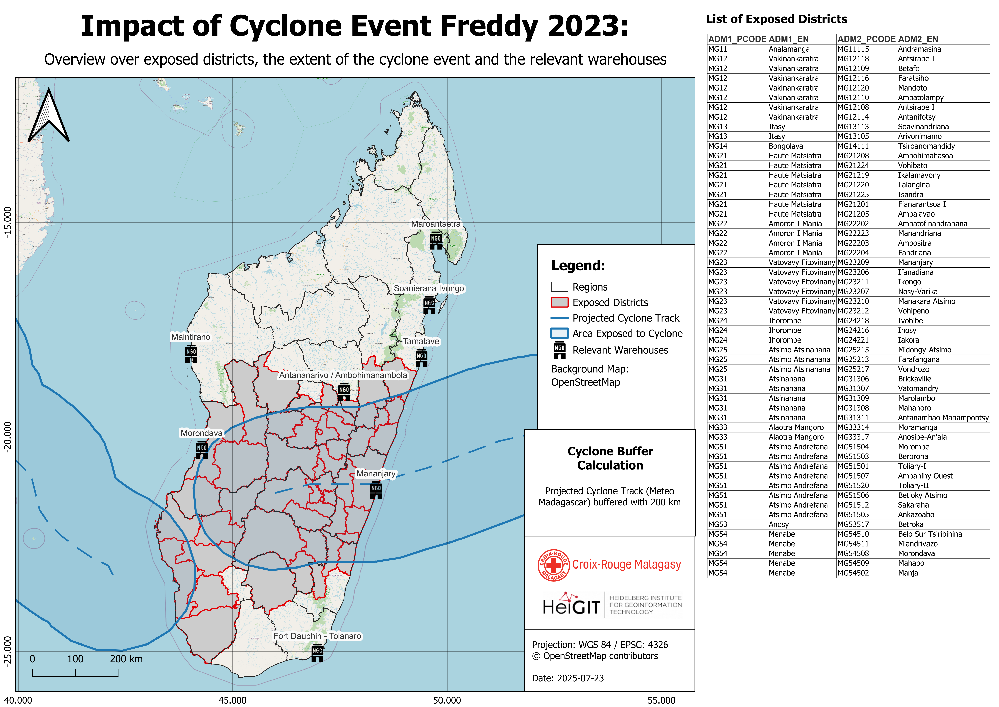
Fig. 62 This map will be created using the layers in group 3.#
Group 4: Map_Cyclone_Impact_Assessment
This group contains all the necessary layers to generate detailed impact assessment maps. As with the overview map, both the storm track and region (Admin1) boundaries are pre-loaded. Ensure you’re using the correct event data to maintain consistency and accuracy in the assessment. In this section we can create 5 different maps for different impacts:
exposed population
exposed buildings
exposed education facilities
exposed health sites
exposed agricultural land cover
The final map outputs will look like the following.
{kind=link}
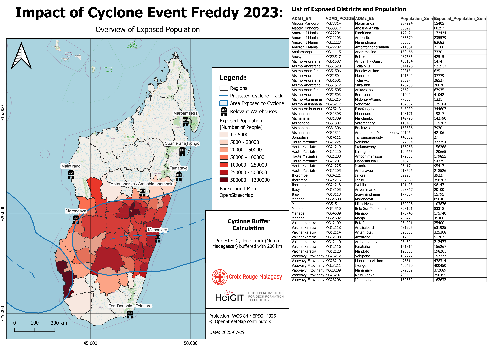
Fig. 63 This map will be created using the layers in group 4#
Group 5: CRM_Warehouse_Isochrones
This group includes isochrones for all warehouses, calculated for time intervals up to 24 hours. These layers are useful for assessing accessibility of locations in emergency response planning. This group is used to create the CRM warehouse accessibility matrix map. It is also possible to add a specific warehouse isochrone to one of the previous maps. We will cover this further below.
Opening the model in QGIS#
Let’s open the QGIS model:
In the tob bar of your QGIS window, navigate to
Processing->Model Designer. A new window will open. This is the model designer.In the upper panel click
Model->Open Modeland navigate to your folder “AA_Cyclone_Monitoring_Trigger_MAD/trigger_model”.Select the “Cyclones_EAP_MAD_Trigger.model3” file and click on
Open. The model will open and you will see yellow, white, green and grey boxes.
{kind=link}
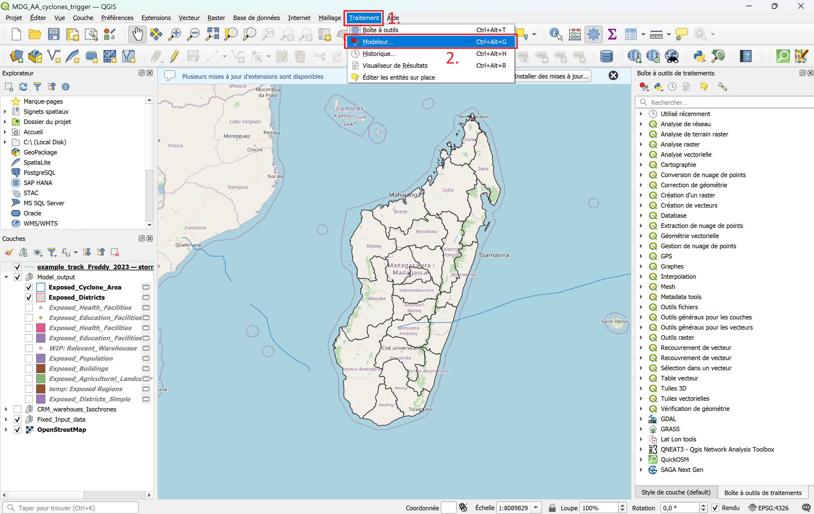
Fig. 64 Opening the graphical modeler in QGIS 3.44#
Box |
Significance |
Description |
|---|---|---|
Yellow |
Model Input |
Definition of the input data for the model the model will perform on. |
White |
Algorithms |
Algorithms or Tools are specific geoprocessing steps that perform specific tasks, such as clipping, reprojecting or buffering. |
Green |
Model Output |
The results created by the model (Output layers) are automatically added to your layers panel in your QGIS project interface. |
Grey |
Comments |
The boxes are used to further explain the specific processes. |
Step 3: Run the model#
{kind=link}
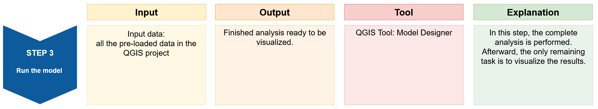
Model Inputs & Outputs
A QGIS model can be run by navigating to the top bar >
Model(Modèle) >Run Model(Exécuter le modèle) or by clicking on the icon.
icon.A new window will open. Here you need to define the model’s inputs and outputs. For each of these mandatory inputs, you click on the dropdown arrow and choose the respective file.
{kind=link}
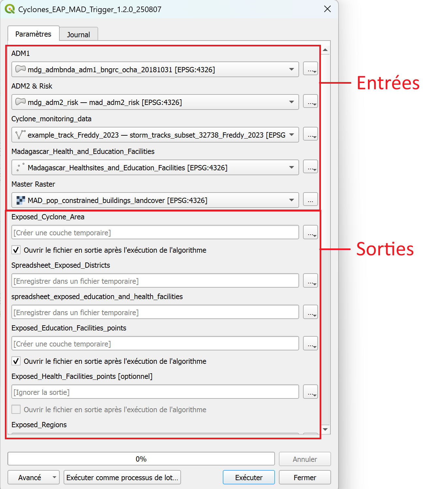
Fig. 65 Selecting the inputs and defining the outputs before running the model.#
To run the model, select the following 5 input layers:
ADM1 =
mdg_admbnda_adm1_BNGRC_OCHA_20181031ADM2 & Risk =
mdg_adm2_risk - mad_adm2_riskCyclone_monitoring_data =
cyclone track of the current eventMadagascar_Health_and_Education_Facilities =
Madagascar_Health_and_Education_FacilitiesMaster Raster =
MAD_pop_constrained_buildings_landcover
Further down, you have to specify where to save the outputs. For each output, click on the three points
 >
> Save to Geopackage(Enregistrer dans un Geopackage...). A File explorer window will open. Navigate to the folder.../AA_Cyclone_Monitoring_Trigger_MDG/model_outputs/and give it the name of the output layer and the date (YYYYMMDD).Exposed_Cyclone_Area_YYYYMMDD, for example,Exposed_Cyclone_Area_YYYYMMDD_20250805One output is called
Spreadsheet_Exposed_Districtfor which the model will ouput a.csv-file. For this layer, chooseSave to file(Enregistrer vers un fichier...), navigate to the folder.../AA_Cyclone_Monitoring_Trigger_MDG/model_outputs/and give it the nameSpreadsheet_Exposed_Districts_YYYYMMDDExposed_Education_Facilities_points_YYYYMMDDExposed_Health_Facilities_points_YYYYMMDDExposed_Regions_YYYYMMDDExposed_Districts_YYYYMMDDExposed_Population_YYYYMMDDExposed_Buildings_YYYYMMDDExposed_Agricultural_Landcover_YYYYMMDDExposed_Education_Facilities_YYYYMMDDExposed_Health_Facilities_YYYYMMDD
Once you have set the names and saving locations for the output layers, click
Runto execute the model. The output result layers will be automatically added to the main QGIS window upon completion. Once the process has finished, you can close theModel Designerwindow.You will see new layers added to the map canvas and the layers panel (on the bottom left). Move the new layers to the group “Model_Outputs”.
{kind=link}
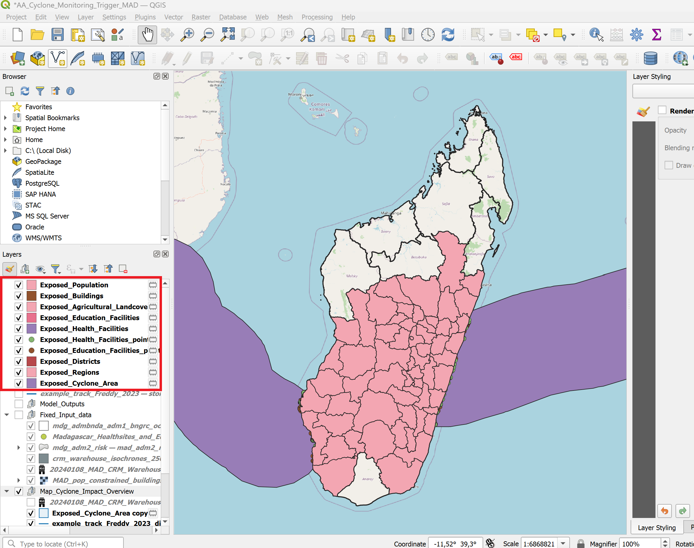
Video: Input and output Model
Results
We have all the necessary layers to create the individual maps. The next section will cover how to use the predetermined and calculated layers to create the maps using the map templates and layer style files.
Creating the map reports using the map templates#
Visualization and Styling of the Model Outputs and creating the Print Map#
Output maps
We will generate two different types of output maps to support the analysis:
Map 1 will provide an cyclone impact overview of the affected districts, the extent of the cyclone event, and the locations of warehouses.
Map 2 will focus on the impact to infrastructure and population. We will create 5 different impact maps displaying the following information:
exposed population
exposed buildings
exposed health sites
exposed education facilities
exposed agricultural landcover
We will create the maps in two steps: First, we will use the layer styling panel and the layer style files (.qml) to adjust the visualisation of the layers on the map canvas.
In a second step, we will use the print layout composer to create printable maps with additional datatables.
Map 1: Cyclone Impact Overview: Affected Districts, Event Extent, and Warehouse Locations#
Layers needed for this map:
CRM_Warehousescyclone_trackExposed_Cyclone_AreaAdmin1_Impact_Overview_Mapalready loaded and styled in QGISExposed_Districts
Right-click on each of the layers and select Duplicate this layer. Move the copy to the group “Map_Cyclone_Impact_Overview”.
The layers should be arranged as shown in the figure below.
{kind=link}
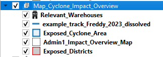
Styling of the layers#
Right click on the exposed_districts layer ->
Properties->SymbologyIn the down left corner click on
Style->Load StyleIn the new window click on the three points
. Navigate to the “AA_Cyclone_Monitoring_Trigger_MAD/layer_styles” folder and select the file “exposed_districts_style.qml”.Click
Open. Then click onLoad StyleBack in the “Layer Properties” window click
ApplyandOK
Repeat this process for the following output layers, along with their corresponding style sheets:
Layer name |
Style |
Comment |
|---|---|---|
|
|
pre-loaded |
|
|
model output |
|
|
model output |
|
|
pre-loaded |
The styling for the layer
CRM_warehousesis not fixed yet. Right-click on the layerCRM_warehouses>Propertiesand navigate to the symbology tab.
{kind=link}
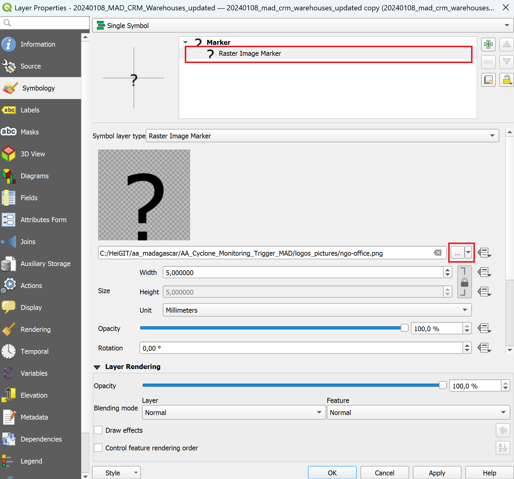
Select
Raster Image Markerand then click on the three points.In the project folder, navigate to the subfolder called
logo_pictures. Here you will find a png-file called “ngo-office”. Select it and clickOpen.
Attention
Ensure that all relevant output layers are properly added to the QGIS project. If any layers are missing, try re-running the model or check your Model Outputs folder to see if the files were created successfully.
To maintain a clear and organized workspace, group the output layers in the Layers panel under the appropriate group (e.g., Map_Cyclone_Impact_Overview). This helps keep your project structured and makes navigation easier during the map creation process.
Making the Print Layout#
For easier visualization, we have created these map templates for presenting the results of the trigger analysis. These templates serve as a base for your own visualizations and are available in the following directory: AA_Cyclone_Monitoring_Trigger_MAD/map_templates. You can customize the templates to suit your needs and preferences. You can find help here.
Deactivate all Layer Groups except the group
Map_Cyclone_Impact_Overviewand theOpenStreetMapbasemap.Open a new print layout by clicking on
Project->Layout Manager. A small new window will appear. Here you can select an existing layout or create a new layout from a template.We want to create a new layout from a template. Click on the
Empty Layoutdropdown menu and selectSpecific.Below, click on the three dots
and navigate to the folder ../AA_Cyclone_Monitoring_Trigger_MAD/map_templates/and select the file with the namecyclone_impact_overview_map_template. ClickOpen, thenCreate.QGIS will ask you to name the new layout. Give it a name such as “Cyclone_Overview_Map_Freddy_2023”. Click
OK. A new window will open. This is the print layout composer. It should look similar to the figure below.
{kind=link}
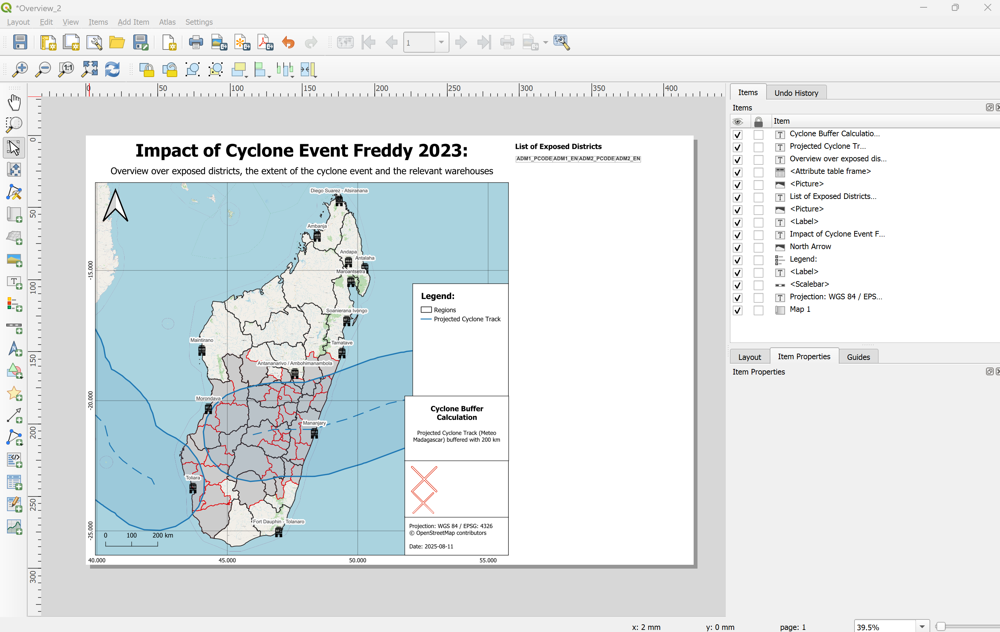
Fig. 66 The print layout composer after opening the template file.#
The print layout will automatically load the map canvas. However, to finish the report, we need to adjust and update some of the elements on the print layout. For example, on the right side of the map, the attribute table is not displayed correctly, the legend seems to be wrong, and the logos of the CRM and HeiGIT are displayed as red crosses.
Update the Map Title
Click on the title text element at the top of the map.
In the
Item Propertiespanel, edit the Main Label text to match your event, e.g.Cyclone Harald – 2025.Adjust font size or alignment as needed.
Update the Attribute Table on the Right-Hand Side of the Map
{kind=link}
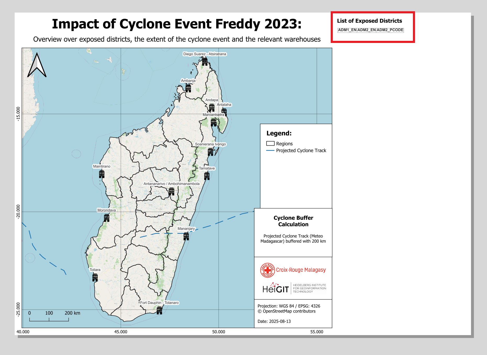
On the right side, there is a attribute table that did not fully load. We want to update the attribute table to display the exposed districts.
In the
Item Propertiespanel, select theExposed_Districtslayer and click Refresh Table DataClick on
Attributes...In the Columns section:
Click
Clear➕ Add the columns:
ADM1_EN,ADM2_EN,ADM2_PCODE
In the Sorting section:
➕ Add
ADM1_ENand set the sort order toAscending
Click OK to apply
Note
💡 If too many districts are affected, the attribute table might not fit the page. Reduce the font size in the table’s item properties to make everything visible — but be aware that this may reduce readability.
Adjust the Legend
Select the legend item, navigate to the
Item Propertiestab and scroll down until you see theLegend itemsfield. If it is not there, check if you have to open the dropdown. Make sureAuto updateis not checked.Remove all items in the legend by clicking on each item and then the red minus icon
In the pop-up, check Only show visible layers to help you find the correct ones
To rename a legend item, double-click on the layer name in the legend item list and enter the new name
➕ Add the following layers by clicking the green plus:
Admin1_Impact_Overview_Mapexposed_districtsCyclone TrackExposed_Cyclone_AreaCRM_warehousesOpenStreetMapNow, let’s rename the layers in the legend. In the Item properties, below the list of the legend layers, there is a
Edit selected item properties-button. By clicking on it, you can edit the label of the icon in the legend. Rename the layers as follows:Admin1_Impact_Overview_Map→ rename to
Regions
exposed_districts→ rename to
Exposed Districts
Cyclone Track→ rename to
Projected Cyclone Track
Exposed_Cyclone_Area→ rename to
Exposed Cyclone Area
CRM_warehouses→ rename to
CRM Warehouses
Background Map: OpenStreetMap→ rename to
Background Map: OpenStreetMap
Adjust the icons by clicking on the
field in the items list or on the red cross in the map template.
In the Item Properties, correct the path to the CRM logo by clicking on the three dots
and navigate to \aa_madagascar\AA_Cyclone_Monitoring_Trigger_MAD\logos_picturesand selecting the CRM logo file.Repeat the process for the second missing image. This time, select the HeiGIT Logo
Below the logos, adjust the information in the text box by selecting the text box and navigating to the Item properties.
Finally, let’s lock the layers and layer styles so that changes in the main QGIS window do not affect our print layout:
In the item list, select Map 1.
In the item properties, check the boxes for lock layers and lock styles for layers. This will prevent the map to automatically when we make changes to the map canvas
{kind=link}
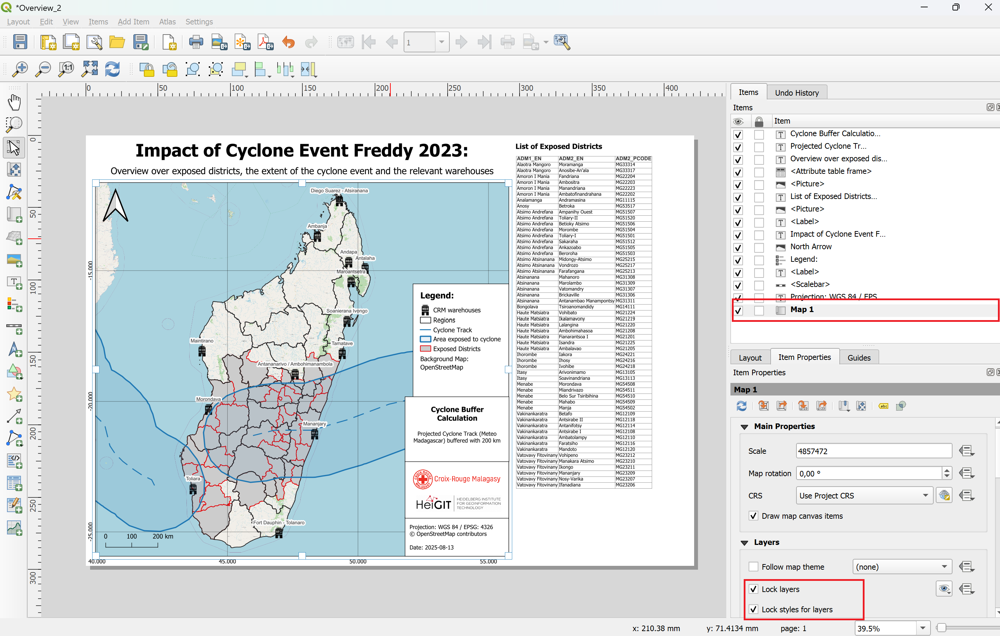
Attention
Checklist for final map output:
Map Information: Review and update all text elements as needed.
Legend: Remove unnecessary items and rename layers with clear, meaningful descriptions.
Exposed Districts: Include only districts that are actually impacted in your “List of Exposed Districts”. Update them according to the event.
Your final output should look like this after styling the layer
Exporting the Map#
When you have finished the design of your map, you can export it as pdf or image file in different data formats.
Export as Image
In the print layout click on
Layer->Export as ImageChoose the map_outputs folder. Give the file the name of the event e.g MDG_Trigger_Impact_Overview_Map_Freddy_2023.
Click on
SaveThe window
Image Export Optionswill appear. ClickSave. Now the image can be found in the result folder.
Export as PDF
In the print layout click on
Layer->Export as PDFChoose the map_outputs folder. Give the file the name of the event e.g MDG_Trigger_Impact_Overview_Map_Freddy_2023.
Click on
Save.The window
PDF Export Optionswill appear. For the best results, select thelosslessimage compression.Click
Save. Now the image can be found in the result folder.
Map 2: Impact Assessment: Exposed Population and Critical Infrastructure#
Layers needed for this map:
CRM_Warehousescyclone_trackExposed_Cyclone_AreaExposed_PopulationAdmin1_Impact_Assessment_Mapalready loaded and style in QGIS
Right click on each layer > Duplicate this layer and move the copies to the group “Map_Cyclone_Impact_Assessment”
{kind=link}
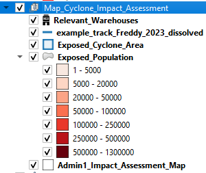
Map 2: Styling of the layers#
Deactivate all the layers except gor the group “Map_Cyclone_Impact_Assessment” and the OpenStreetMap Basemap.
Right click on the “exposed_population - copy” layer ->
Properties->SymbologyIn the down left corner click on
Style->Load StyleIn the new window click on the three points
. Navigate to the “AA_Cyclone_Monitoring_Trigger_MAD/layer_styles” folder and select the file “exposed_population_style.qml” style layer.Click
Open. Then click onLoad StyleBack in the “Layer Properties” window click
ApplyandOK
Repeat this process for the following output layers, along with their corresponding style sheets:
Layer name |
Style |
Comment |
|---|---|---|
|
|
pre-loaded |
|
|
model output |
|
|
model output |
|
|
loaded by user |
Attention
Ensure that all relevant output layers are properly added to the QGIS project. If any layers are missing, try re-running the model or check your Model Outputs folder to see if the files were created successfully.
To maintain a clear and organized workspace, group the output layers in the Layers panel under the appropriate group (e.g., Map_Cyclone_Impact_Overview). This helps keep your project structured and makes navigation easier during the map creation process.
Other Impact Assessment Maps
The documentation covers the exposed population impact assessment map. However, the model also estimates the exposed buildings, landcover, and health and education facilities. These variables can also be displayed on the map using the following style files. To keep the map easily understandable, use only one of the
Layer name |
Style |
Comment |
|---|---|---|
|
|
model output |
|
|
model output |
|
|
model output |
|
|
model output |
|
|
model output |
|
|
model output |
|
|
model output |
|
|
model output |
|
|
model output |
|
|
loaded by user |
Map 2: Making the Print Layout#
Tip
The same workflow applies to all five impact variables: population, buildings, education facilities, health sites, and agricultural landcover. The following example demonstrates the process for creating the population impact map. The remaining maps can be generated by following the same steps.
Open a new print layout by clicking on
Project->Layout Manager. A small new window will appear. Here you can select an existing layout or create a new layout from a template.We want to create a new layout from a template. Click on the
Empty Layoutdropdown menu and selectSpecific.Below, click on the three dots
and navigate to the folder ../AA_Cyclone_Monitoring_Trigger_MAD/map_templates/and select the file with the namecyclone_impact_population_map_template. ClickOpen, thenCreate.QGIS will ask you to name the new layout. Give it a name such as “Cyclone_Overview_Map_Freddy_2023”. Click
OK. A new window will open. This is the print layout composer. It should look similar to the figure below.
{kind=link}
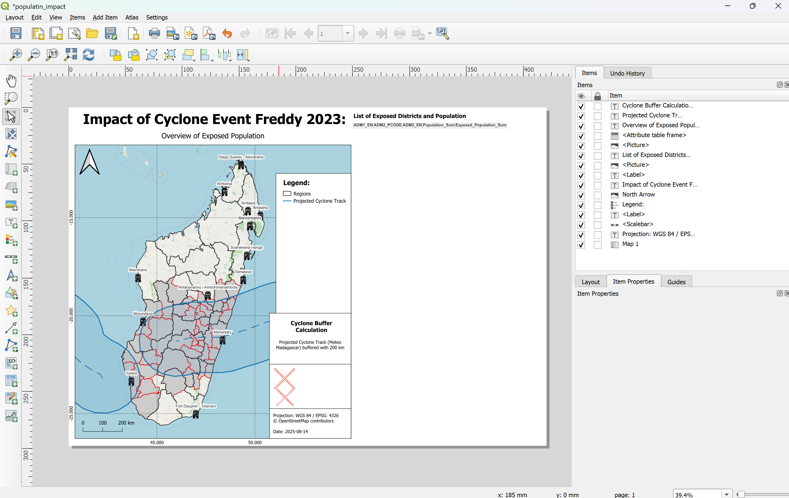
Update the Map Title
Click on the title text element at the top of the map.
In the
Item Propertiespanel, edit the Main Label text to match your event, e.g.Cyclone Harald – 2025.Adjust font size or alignment as needed.
Update the Attribute Table on the Right-Hand Side of the Map
To update the attribute table displaying the exposed districts:In the
Item Propertiespanel, select theexposed_populationOr any other layer you are working with layer and click Refresh Table DataClick on
Attributes...In the Columns section:
Click
Clear➕ Add the columns:
ADM1_EN,ADM2_EN,ADM2_PCODEandexposed_populationor any other layer you are working with
In the Sorting section:
➕ Add
ADM1_ENand set the sort order toAscending
Click OK to apply
Note
If too many districts are affected, the attribute table might not fit the page. Reduce the font size in the table’s item properties to make everything visible — but be aware that this may reduce readability.
Adjust the Legend by clicking on it in the map layout and have a look at the
Item Propertiestab and scroll down until you see theLegend itemsfield. If it is not there, check if you have to open the dropdown. Make sureAuto updateis not checked.Remove all items in the legend by clicking on each item and then the red minus icon
In the pop-up, check Only show visible layers to help you find the correct ones
To rename a legend item, double-click on the layer name in the legend item list and enter the new name
➕ Add the following layers by clicking the green plus:
In the pop-up, check Only show visible layers to help you find the correct ones
💡 To rename a legend item, double-click on the layer name in the legend item list and enter the new name
Ensure all legend entries use clear and meaningful labels
Admin1_Impact_Overview_Map→ rename to
Regions
exposed_population→ rename to
Exposed Population
Cyclone Track→ rename to
Projected Cyclone Track
Exposed_Cyclone_Area→ rename to
Exposed Cyclone Area
CRM_warehouses→ rename to
CRM Warehouses
Background Map: OpenStreetMap→ rename to
Background Map:
OpenStreetMap
Admin1_Impact_Overview_Map→ rename to
Regions
exposed_building→ rename to
Exposed Buildings
Cyclone Track→ rename to
Projected Cyclone Track
Exposed_Cyclone_Area→ rename to
Exposed Cyclone Area
CRM_warehouses→ rename to
CRM Warehouses
Background Map: OpenStreetMap→ rename to
Background Map:
OpenStreetMap
Admin1_Impact_Overview_Map→ rename to
Regions
exposed_health_facilities→ rename to
Exposed Health Facilities
Cyclone Track→ rename to
Projected Cyclone Track
Exposed_Cyclone_Area→ rename to
Exposed Cyclone Area
CRM_warehouses→ rename to
CRM Warehouses
Background Map: OpenStreetMap→ rename to
Background Map:
OpenStreetMap
Admin1_Impact_Overview_Map→ rename to
Regions
exposed_education_facilities→ rename to
Exposed Education Facilities
Cyclone Track→ rename to
Projected Cyclone Track
Exposed_Cyclone_Area→ rename to
Exposed Cyclone Area
CRM_warehouses→ rename to
CRM Warehouses
Background Map: OpenStreetMap→ rename to
Background Map:
OpenStreetMap
Admin1_Impact_Overview_Map→ rename to
Regions
exposed_agricultural_landcover→ rename to
Exposed Agriculture in Hectare
Cyclone Track→ rename to
Projected Cyclone Track
Exposed_Cyclone_Area→ rename to
Exposed Cyclone Area
CRM_warehouses→ rename to
CRM Warehouses
Background Map: OpenStreetMap→ rename to
Background Map:
OpenStreetMap
Admin1_Impact_Overview_Map→ rename to
Regions
exposed_health_facilities_points→ rename to
Exposed Health Facilities Points
Cyclone Track→ rename to
Projected Cyclone Track
Exposed_Cyclone_Area→ rename to
Exposed Cyclone Area
CRM_warehouses→ rename to
CRM Warehouses
Background Map: OpenStreetMap→ rename to
Background Map:
OpenStreetMap
Admin1_Impact_Overview_Map→ rename to
Regions
exposed_education_facilities_points→ rename to
Exposed Health Education Points
Cyclone Track→ rename to
Projected Cyclone Track
Exposed_Cyclone_Area→ rename to
Exposed Cyclone Area
CRM_warehouses→ rename to
CRM Warehouses
Background Map: OpenStreetMap→ rename to
Background Map:
OpenStreetMap
Your final output should look like this after styling the layer
The map now clearly displays the exposed population within the affected districts, along with the locations of relevant warehouses. The original storm track line — used as input data — is highlighted, as well as the buffered impact area, which serves as a proxy for identifying exposed districts.
On the right-hand side of the map, a list shows all exposed districts, including data on total population and exposed population. The districts (Admin 2) are organized under their corresponding regions (Admin 1).
Exporting the Map#
When you have finished the design of you map you can export it as pdf or image file in different data formats.
Export as Image
In the print layout click on
Layer->Export as ImageChoose the map_outputs folder. Give the file the name of the event e.g MDG_Trigger_Impact_Overview_Map_Freddy_2023. For the specific impact assessment change the name to something like MDG_Trigger_Impact_Population_Map_Freddy_2023.
Click on
SaveThe window
Image Export Optionswill appear. ClickSave. Now the image can be found in the result folder.
Export as PDF
In the print layout click on
Layer->Export as PDFChoose the map_outputs folder. Give the file the name of the event e.g MDG_Trigger_Impact_Overview_Map_Freddy_2023. For the specific impact assessment change the name to something like MDG_Trigger_Impact_Population_Map_Freddy_2023.
Click on
Save.The window
PDF Export Optionswill appear. For the best results, select thelosslessimage compression.Click
Save. Now the image can be found in the result folder.
{kind=link}
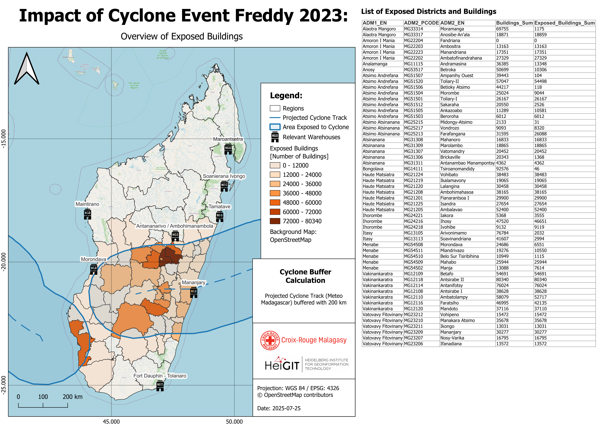
Working with the warehouse isochrones#
The project includes isochrones for each warehouse. The warehouse isochrones correspond to one warehouse and are identifiable by their location name. If you want to add an isochrone to one of the It is possible to add individual isochrones to the map templates by simply duplicating the isochrone layer and moving it to the desired map group.
Historical Analysis of Cyclone Impacts#
To run the full trigger process using historical cyclone track data, you can assess the impacts of past events and gain insights into what occurred in similar scenarios. The storm track data is available from the International Best Track Archive for Climate Stewardship (IBTrACS). Instructions on how to access this data are provided in the following section.
Download of historical storm track data#
The International Best Track Archive for Climate Stewardship (IBTrACS) v04r01 data is updated three times a week (usually on Sunday, Tuesday, and Thursday), and could be updated more frequently to address specific needs and use cases. The latest updates in the correct file format can be found on their website:
Look for the
Access Methodssection and click onShapefiles. The link leads to the following website which can also be seen in the figure below.Since we don’t need storm track data for the entire world or the full archive, we will download only a relevant subset. Locate for the file named
IBTrACS.ACTIVE.list.v04r01.lines.zipand click on it - the download should begin automatically.Unzip the file and open it in QGIS.
Open the attribute table and delete all the storm tracks that are not relevant for this analysis. Safe the updated storm track file.
Note
The storm track subset IBTrACS.ACTIVE.list.v04r01.lines.zip contains all storms active in the last 7 days. If more comprehensive data is needed, it is advisable to download a subset by basin. For Madagascar, the most relevant region is SI – South Indian, which includes our Area of Interest. This dataset can be downloaded from the same website under the name IBTrACS.SI.list.v04r01.lines.zip.